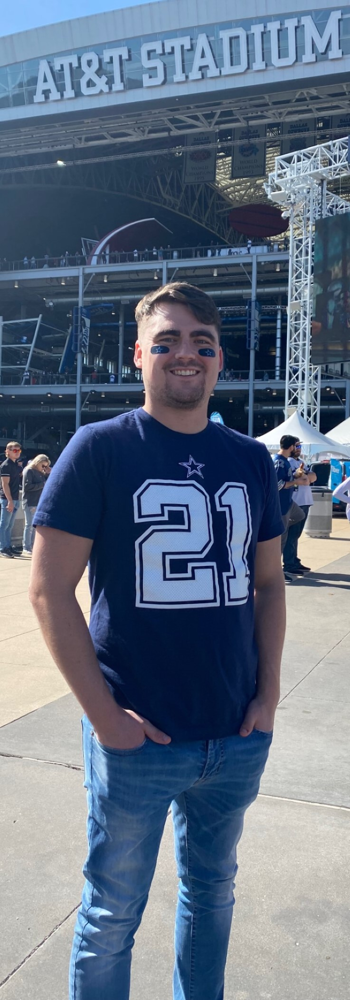

Hi! I'm Connor Foster
I'm a student studying software development at Thinkful Bootcamp. I'm currently residing in Cincinnati, Ohio with my girlfriend and 2 dogs.
About Me
I graduated from The Ohio State University in May of 2020 with a B.S. in Electrical and Computer Engineering. After graduation, I decided my passion was in the field of software engineering, so now I'm transitioning with the help of Thinkful Engineering Flex program!
Outside of Software Development, I enjoy walking my dog, playing video games, and hanging out with family/friends. On saturdays during football season, you're likely to find me slouched on the couch and glued to the television for the majority of the day.